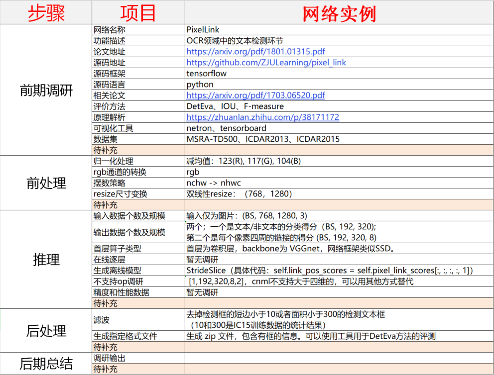
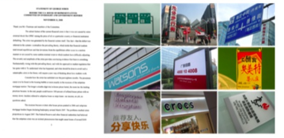

总结¶
一. PixelLink 网络调研：¶
上图是PixelLink网络调研表格输出，对应的网址请看页尾的注释。
1. 移植细节：¶
网络的源码是从论文提供的官方 github 中获取，同时可移植性测试是在 MLU100，V8.2.1 软件栈中进行。
目前不支持算子为 StrideSlice 。主要在网络的最后一层，其作用是对 五维 tensor 进行切分 ，得到所需要的四维 tensor。根据源码分析，可通过 修改算子实现 解决此问题。
目前没有确切的网络移植需求以及客户的具体网络实现，因此还 未进行精度和性能的评测 。
2. 移植分析：¶
文字检测：PixelLink 是文字检测领域中比较常用的一个网络框架。其中 backbone 为 SSD 网络 ，而 MLU 对 SSD 已有适配，因此 PixelLink 对 MLU 来说 可移植性强 。文字识别：当前通用的文字时别算法采用了 RNN 回归网络 ，而 MLU 之前也有成功的 RNN 网络的落地（百度语音项目）。
综上所述，MLU产品适合进入OCR领域，进行相关网络的适配工作。同时根据已有的经验和调研分析，可以提高适配后网络的性能同时保证精度。
二. 当前挑战：¶
首先，它与传统 OCR（光学字符识别） 有所区别，因自然场景之中文字变化非常之多，如下图所示：左边是一张典型的 扫描文档图像，右边则是 自然场景 中采集的多张图像。
通过对比可以发现:
左图的背景非常 干净，右图的背景非常 杂乱；
左边字体非常 规整，右边则 千变万化；
左边布局较为 平整统一，右边则 多元复杂，缺乏规范；
左边 颜色单调，右边 颜色种类繁多。
目前来看，深度学习时代之下的场景文字检测与识别技术依然存在巨大挑战，其主要体现在以下 3 个方面：
文字的差异性 ：存在着语言、字体、方向、排列等各种各样的形态；
背景的复杂性 ：比如几乎无法区分的元素（标志、篱笆、墙砖、草地等）；
干扰的多样性 ：诸如噪声、模糊、失真、低分辨率、光照不均匀、部分遮挡等情况。
二. 未来机遇：¶
相应而言，针对上述挑战，文字检测与识别具体研究有着以下 4 个技术趋势 ：
设计更强大的模型；
识别多方向、弯曲文字；
识别多语言文字；
合成更丰富逼真的数据集。